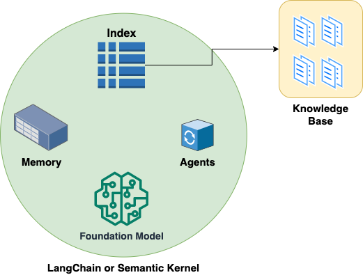

In the past decade, the field of IT operations has seen a revolution in automated systems. The focus has been on Infrastructure as Code (IaC), configuration management, and scripting. These approaches have brought about increased speed, efficiency, and reliability in deploying and managing complex IT systems. However, as we look forward to the next wave of advancements, we’re on the cusp of a new era – one that leverages intent and natural language for IT operations.
The rise of large language models (LLMs) and agent-based systems is poised to redefine IT operations. These technologies are bringing us closer to a future where IT operations can become increasingly autonomous, reducing the need for repetitive manual tasks and allowing for more strategic and creative problem-solving.
So, what exactly are LLMs and how do they fit into this new era of IT operations?
Large Language Models and IT Operations
Large language models, like OpenAI’s GPT-4, are AI models trained on a diverse range of internet text. But instead of being trained on a specific task, they’re trained to predict the next word in a sentence. This allows them to generate human-like text that can answer questions, write essays, summarize texts, and even generate Python code.
One of the most exciting applications of LLMs is in the realm of IT operations. These models can be trained on IT-related text, such as documentation, scripts, and manuals, and can then provide natural language interfaces to these knowledge bases. This means you could potentially ask the model a question in plain English about a specific IT operation, and it could provide you with a relevant answer or even a script to execute.
Intent-Based IT Operations
The power of LLMs and agent-based systems also opens up the possibility of intent-based IT operations. Instead of writing scripts for every possible scenario, IT professionals can simply state their intent, and the system can figure out how to achieve that intent.
For instance, a system administrator could specify their intent to create a new user account on a system. Instead of having to write a script or run a series of commands, they could simply communicate this intent to the LLM. The model could then generate the necessary commands or scripts to execute this intent.
Agents and Autonomy
The role of agents in this new era cannot be understated. These intelligent systems can use LLMs as a foundation to not only understand intent but also execute actions based on that understanding. As these agents get more sophisticated, they will be able to handle more complex tasks, leading to a higher degree of autonomy in IT operations.
Imagine a future where IT agents can independently handle tasks such as system monitoring, issue resolution, and even infrastructure management based on the goals and parameters set by humans. This level of autonomy could free up IT professionals to focus on higher-level strategic thinking and innovation.
The Role of Langchain and Semantic Kernel in IT Operations

As we’ve discussed the potential of Large Language Models (LLMs) and agent-based systems, it’s crucial to understand how tools like Langchain and Semantic Kernel make this possible. These systems combine LLMs, agents, indexes, memory, and foundation models to create powerful IT operation tools.
Agents
Agents in this context are autonomous systems that can understand and execute actions based on user intent. They use LLMs as a foundation to understand natural language inputs, translate those into tasks, and then execute those tasks. Langchain, for instance, uses these agents to handle a variety of tasks, such as answering questions based on a custom knowledge base or running shell commands returned by the agent.
Indexes
Indexes are a way to store and retrieve information in a manner that is efficient and easy to search. In the context of Langchain, an index is used to store a custom knowledge base which could include IT-related texts like documentation, scripts, or manuals. This information is then readily available for the agent to retrieve when answering questions or executing tasks.
Memory
Memory in this context is used by the agent to remember past interactions or tasks. This allows the agent to have a context for its actions and decisions. For instance, Langchain uses a ConversationBufferMemory to remember the history of the conversation which can then be used for generating responses.
Foundation Models
Foundation models are pre-trained AI models that can be fine-tuned for various tasks. They serve as the foundation for the agents to understand and generate natural language. In the case of Langchain, OpenAI’s GPT-4, a large language model, serves as the foundation model. It is used to generate human-like text, answer questions, and even generate code based on the information stored in the index and the agent’s memory.
Here is an example of generating a Jira ticket, based on a natural language query :
import os
from langchain.agents import AgentType
from langchain.agents import initialize_agent
from langchain.agents.agent_toolkits.jira.toolkit import JiraToolkit
from langchain.llms import OpenAI
from langchain.utilities.jira import JiraAPIWrapper
os.environ["JIRA_API_TOKEN"] = "abc"
os.environ["JIRA_USERNAME"] = "123"
os.environ["JIRA_INSTANCE_URL"] = "https://jira.atlassian.com"
os.environ["OPENAI_API_KEY"] = "xyz"
llm = OpenAI(temperature=0)
jira = JiraAPIWrapper()
toolkit = JiraToolkit.from_jira_api_wrapper(jira)
agent = initialize_agent(
toolkit.get_tools(),
llm,
agent=AgentType.ZERO_SHOT_REACT_DESCRIPTION,
verbose=True
)
agent.run("create a jira ticket to patch linux servers")Conclusion
The progression from automation to autonomy in IT operations is an exciting development. Leveraging intent and natural language through the use of large language models and agent-based systems have the potential to revolutionize the field. While these technologies are still evolving, the future of IT operations looks promising and is certainly something to look forward to.